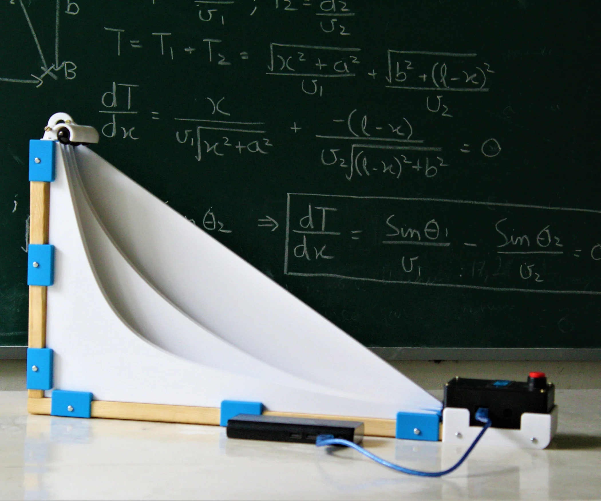

Measured, Not Predicted: Rethinking AI for Science
Posted on Jan 13, 2026
I recently came across a paper titled Detailed balance in large language model-driven agents (arXiv:2512.10047). At first glance, it looks like a technical curiosity: the authors experimentally probe the transition probabilities between states generated by large language models (LLMs) and discover that, at a coarse-grained level, these transitions satisfy detailed balance.
In statistical physics, detailed balance implies that there exists an effective potential (or energy) function \(E(s)\) over states \(s\), such that
Translated into plain language: although LLM generation looks stochastic and heuristic-driven, its long-time behavior resembles motion on a landscape shaped by a potential. The system drifts toward lower-energy (more stable, more coherent) semantic states.
The authors go further and make a strong claim: this phenomenon appears independent of specific model architectures or prompt templates, hinting at a macroscopic law governing LLM-driven agents rather than an implementation detail.
This is intriguing—but it also raises a much deeper question.
The Question We Actually Care About
Before the reader’s patience runs out, let me jump directly to the real issue:
What kind of AI do we actually need for AI for Science?
Not a better chatbot. Not a more accurate regressor. But an AI system that can genuinely participate in scientific discovery.
The rest of this Blog is an attempt to use the detailed-balance observation as a stepping stone toward answering that question.
A Detour: LLMs and Classical Mechanics as State Machines
If the following section feels too technical, feel free to skip to the next one. Nothing essential is lost.
Semantic State Space and Potentials in LLMs
An LLM can be viewed as a stochastic state machine evolving in a high-dimensional semantic state space. At each step, given a current hidden state \(s_t\), the model samples the next token, producing a new state \(s_{t+1}\).
Empirically, this evolution often behaves as if guided by an implicit potential function \(E(s)\):
- states with internal contradiction or semantic incoherence sit at higher “energy,”
- states that are self-consistent, well-structured, and contextually appropriate sit lower.
Attention mechanisms act as transport operators on this landscape, redistributing probability mass and effectively shaping local gradients in semantic space.
Classical Mechanics: Phase Space and Least Action
In classical mechanics, the state of a system is described by coordinates \(q\) and momenta \(p\), forming a phase space. Dynamics are governed by the principle of least action:
where \(L\) is the Lagrangian. Physical trajectories are those that extremize \(S\).
A familiar illustration is the Brachistochrone problem: given two points in a gravitational field, the path of fastest descent is not a straight line but a cycloid. The system does not “predict” the endpoint; it follows the path that minimizes action under constraints.

The parallel should already feel uncomfortable—in a productive way.
With this analogy in mind, the detailed-balance result becomes less mysterious. LLM generation behaves like a stochastic dynamical system drifting on an effective energy landscape, much like:
- Langevin dynamics in statistical mechanics,
- or gradient flow with noise in an energy landscape.
Traditional machine learning models fit into this picture as well:
- During training, almost all models minimize a loss function, i.e., an action in parameter space.
- During inference, however, most classical models (e.g., CNNs) collapse into a single feed-forward map, with no observable internal dynamics.
LLMs are different because their inference process is itself a dynamical trajectory.
So far, this sounds like a victory for prediction-based worldviews. But this is exactly where the trap lies.
However, The World Is Measured, Not Predicted
This statement sounds trivial, and almost tautological:
But yet, this sentence cuts directly against the grain of most AI-for-Science narratives.
Why Prediction Is Fundamentally Limited
Imagine training a model using Newtonian mechanics and classical trajectories, then asking it to solve a chaotic three-body problem. I have no doubt it could produce an extraordinarily accurate numerical solution.
But such a model will never discover relativity or quantum mechanics.
Why?
Because those degrees of freedom are absent from its phase space. The action it minimizes lives entirely within a classical manifold:
No amount of optimization inside this space will generate states corresponding to quantum superposition or relativistic time dilation. The model can only become better at being wrong.
Exploration, Not Extrapolation
Scientific discovery does not proceed by extrapolating within a fixed state space. It proceeds by colliding with the boundaries of that space.
One might say that science advances like a blind person mapping a room: guided by local principles (such as least action), but fundamentally reliant on contact, resistance, and measurement.
This is precisely why the detailed-balance observation actually supports—not undermines—this position. The existence of a potential means the system is stable within its accessible space, but says nothing about whether that space is complete.
The Apparent Paradox: What Belongs in the Model’s Phase Space
At this point, a contradiction seems unavoidable:
- LLMs (and any models) operate in a pretrained, fixed state space.
- Science requires discovering new dimensions of reality.
How can both be true?
The resolution is simple but subtle: the model’s state space is not the world’s state space.
The model does not need to represent all physical phases. It needs to represent how to act when it does not know what phase it is in.
This leads to the real question:
What should we put into the model’s state space?
The wrong answer is: all known physical phases.
Encoding every known order parameter, symmetry class, and Hamiltonian assumption hard-codes today’s ignorance into tomorrow’s machines.
A better answer is: human methodological principles.
Humans have practiced science for millennia using a remarkably stable loop:
- act,
- observe,
- reflect,
- revise.
This was true in Aristotle’s time, and it is true today.
Consider an analogy: if you show a donut to a model that has only ever seen “spherical vacuum chickens,” it may output “spherical cow” or “cubical pig,” but it will never output a donut. The topology itself is alien to its representation.
A good scientific agent should not force the donut into an existing category. It should instead change what it does next.
This is the role of action–observation loops such as ReAct: not as a prompt trick, but as a semantic escape hatch. When explanation fails, the system flows back into a space of actions and measurements rather than hallucinated understanding.
How Do You Want Your AI for Science?
We can now propose a concrete criterion:
A good AI-for-Science system is not one that predicts well, but one that remains stable when prediction fails.
When encountering an irreducible anomaly, it should:
- avoid divergence,
- avoid forced pattern matching,
- avoid minimizing loss at all costs,
- and instead re-enter an action–observation regime.
In thermodynamic terms, this is not about reaching the lowest-energy state, but about choosing the correct basin of dynamics when the current effective theory breaks down.
LLMs reveal something profound: intelligence can emerge from motion on a potential landscape. But science does not emerge from better potentials alone.
It emerges when a system knows when to stop explaining and start measuring.
If AI is to contribute meaningfully to science, its internal state space should not attempt to mirror the universe. It should mirror the way humans remain epistemically honest in the face of the unknown.
Prediction lives inside a map.
Discovery begins where the map ends.